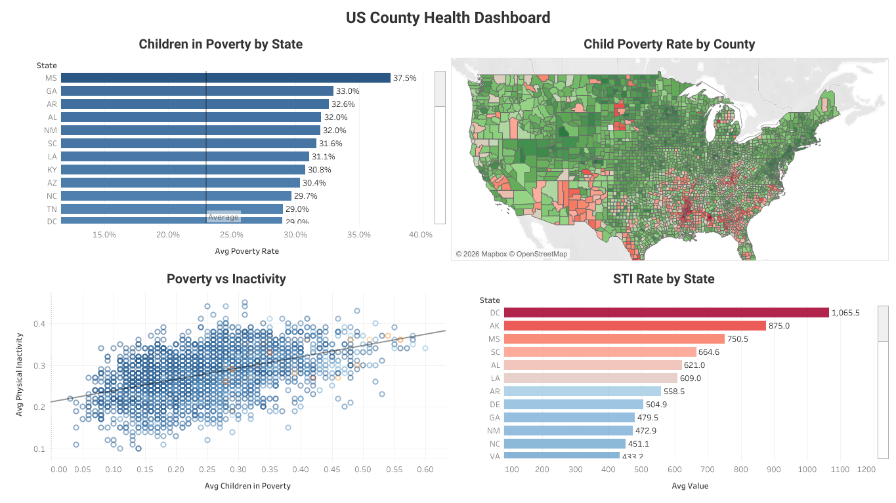
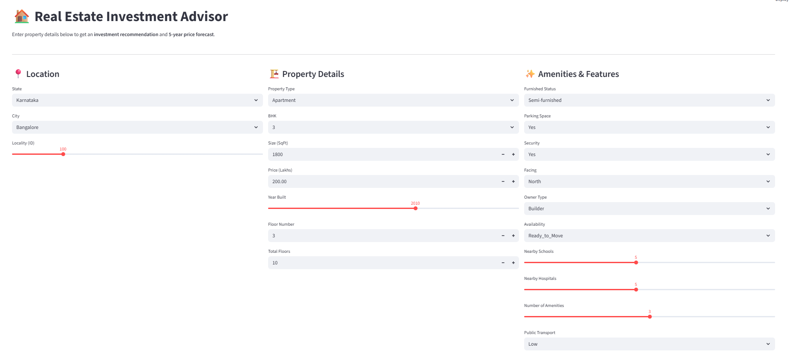
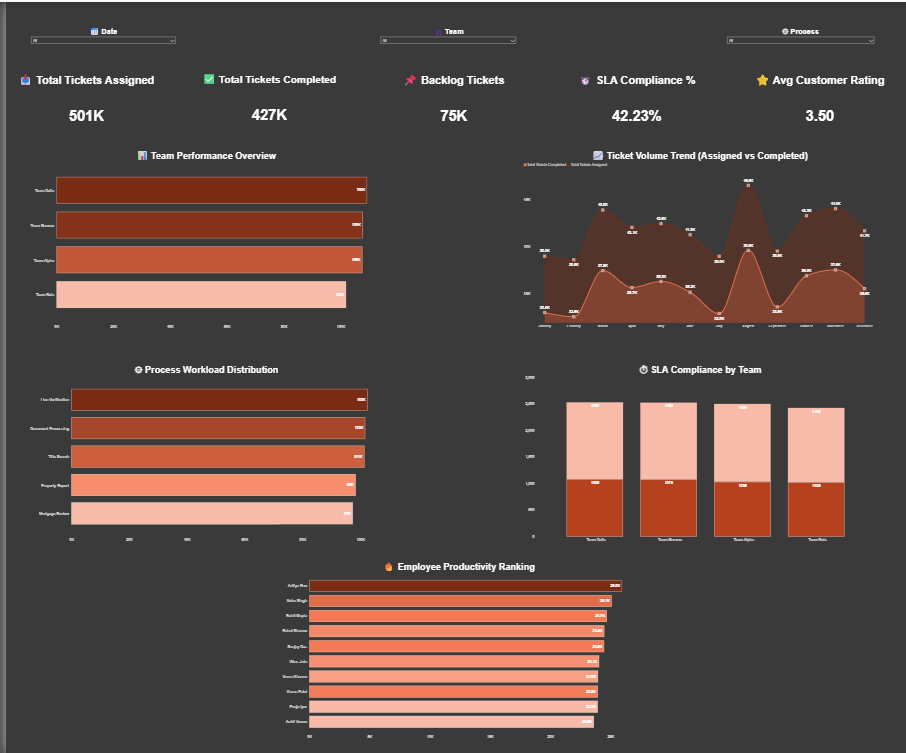
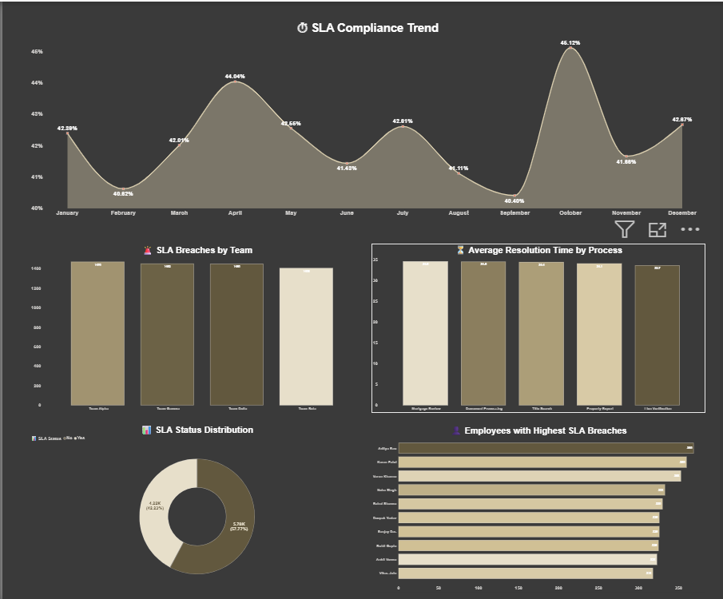
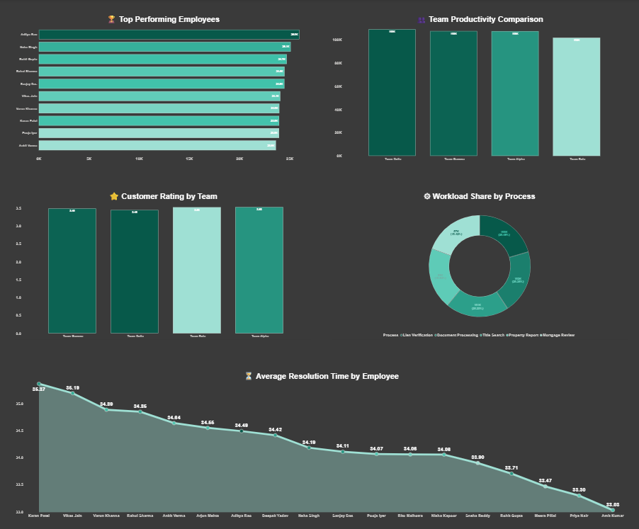

Operations professional transitioning into analytics through real-world business problem solving using Power BI, SQL, Tableau, and Python.
I spent 7+ years inside operational teams understanding SLA pressure, reporting inefficiencies, workflow bottlenecks, and decision-making gaps — before learning analytics tools.
Today, I build dashboards and analytics systems designed around how businesses actually operate.
Analytics Projects
Records Analyzed
Years Experience
ML Accuracy
I’m Raju Kumar S, a Bengaluru-based Data Analyst with 7+ years of experience in operations, client servicing, quality assurance, and process improvement.
My journey into analytics started long before learning Power BI or Python. I was already solving business problems through KPI reporting, workflow analysis, productivity tracking, and operational reviews.
What sets me apart from a traditional entry-level analyst is my operational understanding. I understand how reporting impacts managers, how workflow bottlenecks affect productivity, and what stakeholders actually need from dashboards and reports to make decisions confidently.
Over the years, I worked closely with business processes, SLA monitoring, quality control, and performance reporting. That experience helped me develop a strong foundation in analytical thinking and problem-solving before transitioning into modern analytics tools.
Today, I combine operational thinking with Power BI, Tableau, SQL, Python, and Excel to build analytics solutions focused on usability, clarity, and business impact.
I enjoy creating dashboards and reporting systems that improve visibility, simplify reporting, and help teams work more efficiently.
I believe great analytics is not just about building dashboards. It is about understanding the business behind the data and creating solutions that help organizations make better decisions with confidence.
Bachelor of Commerce (Finance)
Dayananda Sagar Institutions, Bengaluru
Mortgage Operations, Quality Assurance, SLA Reporting, Event Operations, KPI Analytics
Power BI, Tableau, SQL, Python, Excel, DAX, KPI Reporting, Data Visualization
Data Analyst, BI Analyst, MIS Analyst, Reporting Analyst
Each project focuses on solving operational, analytical, or business reporting challenges using modern analytics tools.

Tableau · Excel · 3,190+ Counties · 51 States
Public healthcare data across 3,190+ US counties lacked clear visualization for identifying regional health disparities.
Built 4 interconnected Tableau views including county maps, poverty analysis, inactivity trends, and STI rate comparisons across 51 states.
Southern US states consistently ranked highest in both poverty and STI prevalence, revealing strong regional healthcare inequality patterns.
Created an interactive healthcare analytics dashboard enabling faster geographic risk interpretation and clearer public health storytelling.
Counties
States
Health Indicators

Python · XGBoost · Scikit-learn · MLflow · Streamlit · 250K Records
Real estate investors lacked a scalable way to evaluate 250K+ properties and identify high-potential investments.
Developed an end-to-end ML pipeline using engineered features, Random Forest classification, and XGBoost regression with MLflow tracking.
Infrastructure availability and pricing relative to city median emerged as the strongest investment indicators.
Delivered a live Streamlit application capable of generating instant investment recommendations and 5-year price forecasts.
ML Accuracy
R² Score
Records Analyzed



Power BI · DAX · PostgreSQL · Star Schema · 10,000+ Records
Operations teams relied heavily on manual Excel reporting, delaying KPI visibility and SLA breach tracking.
Built a multi-page Power BI dashboard using PostgreSQL, star schema modeling, and DAX-based KPI calculations.
Centralized reporting significantly improved visibility into workforce productivity trends and SLA breaches.
Reduced manual reporting dependency while providing managers with a real-time operational monitoring system across 10K+ records.
Records
Dashboard Pages
Manual Reports
A collection of dashboards, analytics systems, reporting solutions, and machine learning projects built using real-world datasets and business-focused problem solving.
Investors needed a scalable way to evaluate 250,000+ real estate listings and identify profitable investment opportunities.
Properties
DAX Measures
Pages
Operations managers lacked real-time visibility into SLA breaches, backlog growth, and workforce productivity trends.
Records
Pages
DAX Measures
Economic indicators across multiple countries lacked centralized reporting for comparing GDP, inflation, and conflict-driven trends.
Records
Countries
Decomposition
Leadership teams needed a centralized dashboard to monitor revenue trends, customer behavior, and operational performance.
Revenue
Orders
Customers
Public healthcare datasets across US counties lacked visual clarity for identifying regional health disparities.
Counties
States
Views
Airbnb pricing patterns across NYC neighborhoods lacked centralized market visibility for demand analysis.
Listings
Market
Visuals
Business datasets required cleaning, transformation, and exploratory analysis before generating insights.
Tasks
Analytics
Workflow
Sales teams needed a simplified reporting dashboard to monitor revenue trends, customer behavior, and order performance.
Revenue
Orders
Customers
My experience spans operations management, KPI reporting, SLA monitoring, workflow optimization, quality assurance, and business process improvement across mortgage operations and client servicing environments.
Certifications and virtual experience programs focused on data analytics, business intelligence, reporting, and operational problem solving.
Comprehensive training in Power BI, SQL, Tableau, Python, Excel, KPI reporting, Dashboard Development, Statistics and Business Analytics Workflows.
Completed executive reporting and business storytelling tasks involving chart selection, Tableau dashboards, and client-focused data presentation.
Completed agile workflow, process mapping, modular design, and user story tasks simulating real consulting engagements.
Hands-on learning focused on DAX, Power Query, Pivot Tables, KPI dashboards, reporting automation, and data visualization best practices.
Training focused on structured problem solving, process optimization, root cause analysis, and operational efficiency improvement.
Covered project planning, stakeholder coordination, workflow management, prioritization, and operational execution strategies.
Open to Data Analyst, BI Analyst, MIS Analyst, Reporting Analyst, and Operations Analytics opportunities.